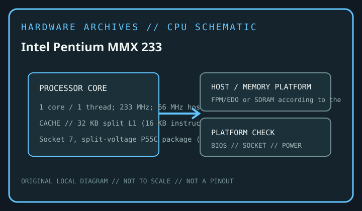

[ INTEL DESKTOP CPU // MODEL RECORD ]
Intel Pentium MMX 233
P55C Pentium with MMX Technology, Q1 1997; 1 core / 1 thread; 233 MHz; 66 MHz host bus; Socket 7, split-voltage P55C package (296-pin SPGA); 32 KB split L1 (16 KB instruction + 16 KB data); external motherboard/chipset L2; 17 W thermal design power. Verify the complete package marking and motherboard support before installation.

MODEL IDENTIFICATION: Intel Pentium MMX 233. This record refers to this desktop SKU, not an entire processor generation; verify the physical marking, S-spec/ordering code and motherboard support list.
Verified model specifications
| Catalog path | Intel → Pentium generations |
|---|---|
| Model / launch era | Intel Pentium MMX 233; P55C Pentium with MMX Technology, Q1 1997 |
| Cores / threads / frequency | 1 core / 1 thread; 233 MHz; 66 MHz host bus |
| Package / socket | Socket 7, split-voltage P55C package (296-pin SPGA) |
| Cache | 32 KB split L1 (16 KB instruction + 16 KB data); external motherboard/chipset L2 |
| TDP | 17 W thermal design power |
| Memory / bus | FPM/EDO or SDRAM according to the Socket 7 chipset and board; 66 MHz host bus; memory is not integrated into the processor. |
| Platform compatibility | Requires a Socket 7 board with P55C split-voltage support: nominal 2.8 V core and a compatible I/O voltage. Verify the specific voltage-regulator, BIOS, bus-jumper and cooling requirements; older Socket 5/P54C boards are not automatically compatible. |
Compatibility and service notes
- Requires a Socket 7 board with P55C split-voltage support: nominal 2.8 V core and a compatible I/O voltage. Verify the specific voltage-regulator, BIOS, bus-jumper and cooling requirements; older Socket 5/P54C boards are not automatically compatible.
- FPM/EDO or SDRAM according to the Socket 7 chipset and board; 66 MHz host bus; memory is not integrated into the processor.
- Desktop 233 MHz P55C; distinguish it from Pentium 200 MMX and P54C Pentium 200/166 parts.
- Before fitting, confirm the exact motherboard manufacturer CPU list, revision, minimum BIOS, power delivery, cooling, package and memory type. Socket fit alone does not establish electrical or firmware compatibility; never force a processor.
Service & archival record
Record the complete processor marking and S-spec/ordering code, stepping, board model/revision, chipset, BIOS/microcode, memory configuration, cooler, power profile, physical condition and provenance. Separate measured behavior from published specifications.
Handle the package by its edges and protect contacts. Inspect for contamination, damaged pins/pads, socket damage and uneven cooler pressure before use.
Sources & further reading
- Intel ARK — exact-model lookup: Intel Pentium MMX 233Intel’s official product-specification search. Legacy products may have limited or archived ARK data; cross-check the physical S-spec and Intel-era documentation.
- Intel Support — desktop processor installation and handlingManufacturer guidance for processor installation; motherboard firmware and platform support must also be confirmed with the board vendor.
- Bitsavers — archived Intel component documentationHistorical Intel processor datasheets and technical manuals for archived Pentium generations; use the appropriate generation document and verify revision-specific errata.
Published specifications are not a guarantee of system compatibility. Confirm the exact processor marking and board-vendor documentation.